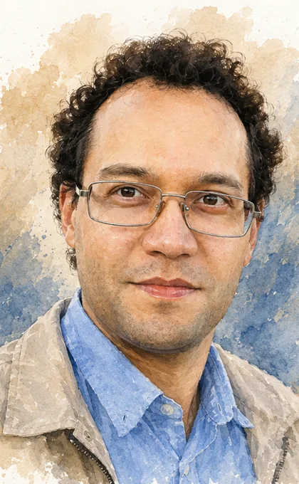
Sergey Artyukhin ✉
PI
(Multi)ferroics, magnetoelectric effect, topological defects and their dynamics, noncollinear magnets, Berry phase phenomena.
We develop realistic models for emergent phenomena in quantum materials. We study static properties and dynamics in materals with complex orders, such as noncollinear magnets, multiferroics, ferroelectric domain structures. We closely collaborate with experimentalists to interpret puzzling data.

(Multi)ferroics, magnetoelectric effect, topological defects and their dynamics, noncollinear magnets, Berry phase phenomena.
Magnetic interactions at finite-temperatures, electron-phonon and spin-phonon coupling, first-principles simulations, multiferroics.
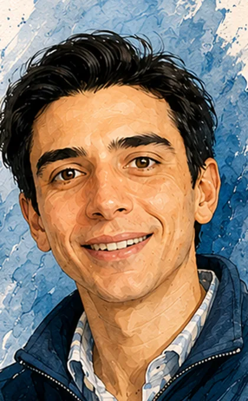
Quantum metric effects, topological pumping of bimerons, merons, and fast ferrimagnetic domain-wall dynamics.
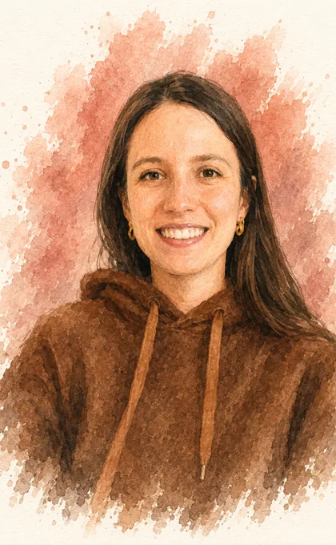
Noncollinear magnets, magnon thermal conductivity, and electric-field-driven domain wall motion in spin spirals.
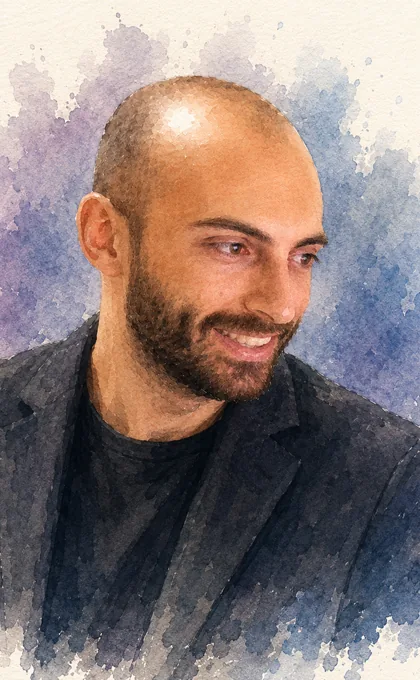
relativistic domain wall motion in ferrimagnets and non-uniform materials
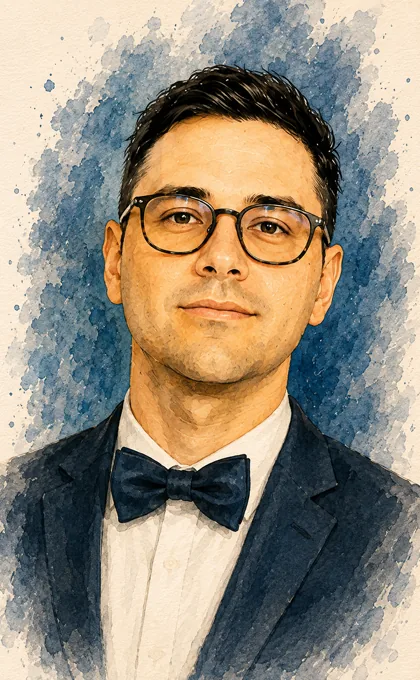
Ultrafast laser-induced spin dynamics, antiferromagnetic writing via magnetoelectric fields, spin-lattice coupling, and nonlinear magnon transport.
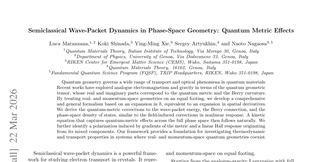
A phase-space treatment of quantum geometry puts real-space and momentum-space effects on equal footing for transport and optical phenomena.
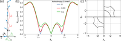
We develop theory of heat transport in noncollinear magnets. Spin noncollinearity leads to three-magnon processes that reduce thermal conductivity. We uncover the relaxons, relaxation modes in the space of magnon occupations, that govern magnetic thermal conductivity.
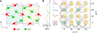
Electric fields are used to map the energy landscape of GdMn2O5, a material with topological order parameter switching process.
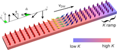
Composition gradients in ferrimagnets are shown to enable new physical mechanisms for domain wall acceleration, with potential for faster racetrack and THz spintronic devices.
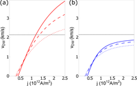
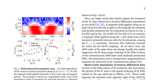
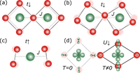
We introduce an ab-initio approach to study temperature dependence of exchange interactions, discuss the mechanisms that govern the temperature dependence and find 10% increase in exchange interactions at room temperature in Cr2O3.
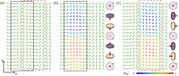
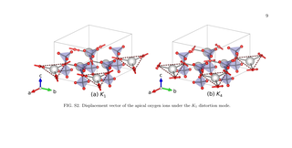
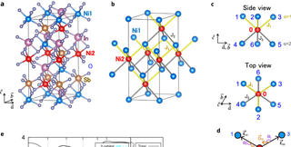
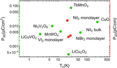
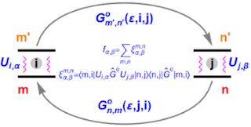
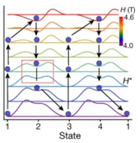
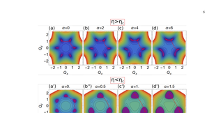
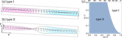
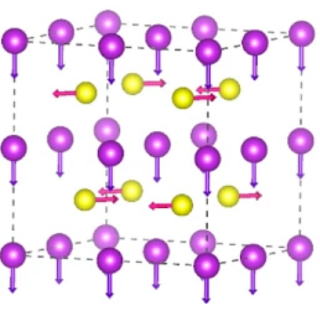
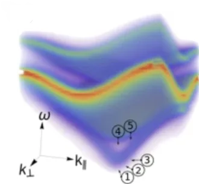